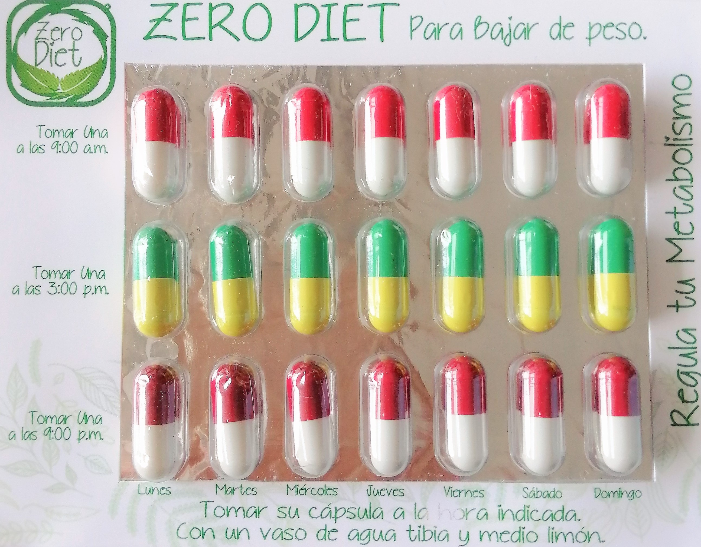
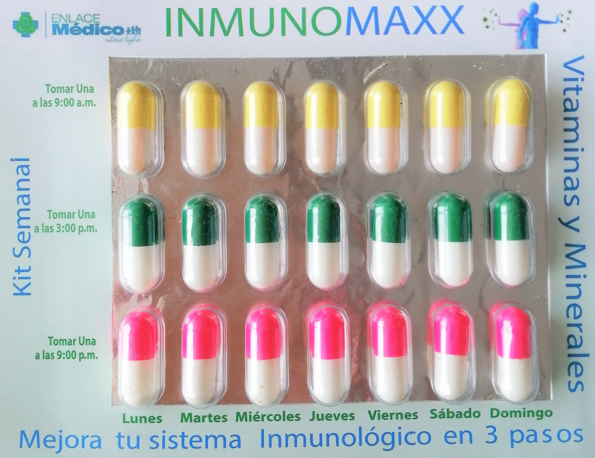

Programa de alimentacion Zero Diet
$199.00 MXN al mes
•Cada semana tendrás tú dieta personalizada.

Suplemento alimenticio Zero DIet 100% Natural
$799.00 MXN al mes
•Recibiras 4 Blister semanales (Tratamiento para un mes)
Envío a tu domicilio GRATIS.
Descripción
El suplemento alimenticio Zero Diet es 100% natural, está elaborado con ingredientes herbales certificados para reducir peso. Este compuesto natural le ayudara a sus pacientes a controlar el peso por su efecto termigénico, disminuye el apetito, baja de
peso, proporciona vitaminas y minerales, reduce la retención de agua, activa el metabolismo de la grasa, baja los niveles de colesterol, es una fuente de energía, produce masa muscular y firmeza además que le ayudará a regular el metabolismo.
-
Cápsula de la mañana:
es un termogénico natural que le ayudará a activar su metabolismo para que baje de peso, quema grasa, disminuye el apetito, proporciona energía y ayuda a digerir bien los alimentos.
Fórmula: Cola de caballo, Enebro, Uva Ursi, Ortiga y Garcinia Cambogía.
-
Cápsula de la tarde:
es un diurético natural que ofrece excelentes resultados por medio de una combinación de ingredientes completamente herbales.
Fórmula: Nopal, Vitamina B6, kola nut, Inositol, L-Carnitina, Hoja Sen, fucus, Ginseng Panax y Phytoloca.
-
Cápsula de la noche:
es un laxante suave que trabaja mediante la estimulación de la peristálsis intestinal. Su contenido le ayudará como restaurador del colon y para desintoxicar el organismo.
Fórmula: Hoja Sen y Cáscara sagrada.
Contradindicaciones: No debe usarse en mujeres lactantes o embarazadas y en niños menores de 12 años.
Dosis: Tomar una cápsula de cada una al día, a la hora indicada, se recomienda tomarlas con un vaso de agua tibia y medio limón.
Presentación: Blíster con 21 cápsulas (tratamiento semanal)
S.S.A. Productos herbolarios de conformidad con los artículos 198, 200 bis y 202 de la ley general de salud.
Paquete mensual
$899.00 MXN al mes
•Programa de alimentación Zero Diet para un mes.
•Suplemento alimenticio Zero Diet 100% natural para un mes.
Envío a tu domicilio GRATIS.

Inmunomaxx
$799.00 MXN al mes
•Mejora tu sistema inmunologico con acciones antivirales, antibacterianas e inflamatorias.
•Suplemento de Vitaminas y Minerales.
•Recibiras 4 Blister semanales (tratamiento para un mes).
Envío a tu domicilio GRATIS.
Descripción
La pandemia que vivimos nos ha hecho reflexionar entre otras cosas lo importante que es tener nuestro sistema inmunológico en óptimas condiciones, por lo que además del suplemento alimenticio nos dimos a la tarea de desarrollar un suplemento de vitaminas
y minerales para mejorar y fortalecer el sistema inmunológico.
Beneficios
-
Eleva el sistema inmune, tiene acciones antivirales, antibacterianas e inflamatorias.
-
Mejora la función orgánica, mejora la visión, ayuda a convertir los alimentos en energía, aporta calcio fortaleciendo huesos y músculos.
-
Es antioxidante, mejora los niveles de colesterol y el funcionamiento del corazón.
Kit semanal de Vitaminas y Minerales para mejorar el Sistema Inmunológico
-
Cápsula de la mañana contiene:
Vitamina A, Vitamina B2, Vitamina B6, Vitamina D3, Vitamina E, Citrato de Hierro y Excipiente cbp.
-
Cápsula de la tarde contiene:
Vitamina C y Excipiente cbp.
-
Cápsula de la noche contiene:
Sulfato de Zinc, Citrato de Magnesio, Omega 6 y Excipiente cbp.